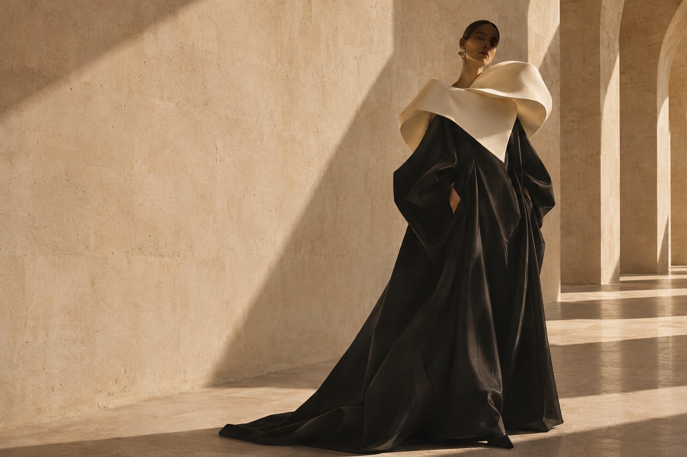

COLLECTION 01 / FORM & FEELING01 / LA COLECCIÓN
Un diálogo entre
estructura y libertad.
Tejidos que sostienen una forma. Movimientos que la liberan. Un estudio editorial de contrastes para quienes ven el vestir como una expresión.
TRES FORMAS DE MIRAR
Selecciona una imagen para explorar ↗02 / LA BIBLIOTECA DE MATERIALES
Siéntelo.
Antes de verlo.
Seda. En movimiento.
Fluida, luminosa, discretamente expresiva. Un estudio de cómo la luz sigue un pliegue.
ESTUDIO DIGITAL DE MATERIALESTU MARCA PODRÍA SENTIRSE ASÍ
Una impresión.
Que permanece.
Crea el tuyo con JEM ↗Un estudio de diseño original de JEM Web Solutions. Marca ficticia, imágenes y especificaciones ilustrativas. Este demo no realiza compras ni reservas.